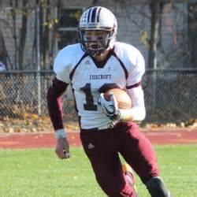

Sports
Pg.3

Sports was always very important to me growing up, from a young age I was in and around
parents very involved in atheletics. My father play Division I football for the University of
Maine and having him as my idol I wanted to do the same. Once I got to high school I realize
I like football bit more than basketball so I pursued football instead. This led to many football
camps throughout the summer and different combines to showcase my talent for different colleges.
In the end I chose to attend the University of Maine like my Father. Today I am a freshman on the
University of Maine's football team. It is a very large time commitment having to attend practices
meetings and lives in between classes. Waking up at 5:30 AM or five days of the school week isn't
the greatest, but it gets me up and ready to go for the day. My first year of college has almost
come to an end it seems like it's gone by so fast. I have learned a lot and I can't wait to see
what the future holds athletically and academically. Below is my Highschool Football Highlight
youtube Link in Purple.
Football Highlight Tape
<--Back
Homepage
Next-->